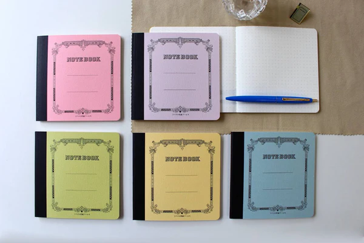

The first thing that stands out is the stainless steel spiral binding. We cannot see but, inside have Unlike coated wire or painted alternatives, the spiral resists bending, rust, and daily wear. It feels industrial without appearing cold, embodying the same understated durability found in many of Japan's most respected tools.
Inside, the paper reflects the standards that made Japanese stationery famous worldwide. Fountain pen users will appreciate the smooth surface and excellent ink control, while pencil writers will notice a satisfying amount of feedback without excessive texture. Ghosting is minimal, and pages remain comfortable to write on even during long sessions.
What makes the Tsubame Notebook particularly appealing is its restraint. There are no trendy features, flashy covers, productivity systems, or marketing gimmicks. It is simply a notebook designed to perform its singular task exceptionally well: preserving thoughts on paper. Over time, the notebook develops a character of its own. The cover softens, the edges acquire subtle signs of use, and the steel spiral remains steadfast. It becomes less of a disposable office supply and more of a personal archive.
What We Like
- Exceptional paper quality - Durable stainless steel spiral binding - Timeless design that avoids trends - Excellent performance with fountain pens - Made in Japan with a long manufacturing heritage
Consider Before Buying
- Premium pricing compared to standard notebooks - Minimalist design may feel too simple for some users - Limited availability outside Japan
The Verdict
The Tsubame Notebook is not trying to be the smartest notebook on the market. Instead, it focuses on craftsmanship, durability, and writing experience. For those who appreciate products built to last—and who believe that good design often goes unnoticed—it remains one of Japan's finest examples of everyday stationery.

Rating: 9.2 of 10
A quiet masterpiece from Tsubame-Sanjo that proves longevity is the ultimate form of innovation.
Final Thoughts
The Tsubame Notebook isn't a product that demands attention—it earns it over time. Every detail, from the stainless steel spiral to the remarkably smooth paper, reflects a commitment to craftsmanship that has remained unchanged for decades. In a world filled with disposable goods and constant redesigns, there's something refreshing about an object that simply works, year after year.
If you value thoughtful manufacturing, timeless design, and a writing experience that prioritizes substance over novelty, the Tsubame Notebook is easy to recommend.
It may not be the most feature-packed notebook available, but it succeeds where it matters most: making you want to keep writing.